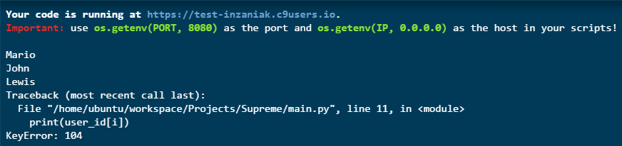

Python: .get() method
TweetOne of the most annoying things that happens to me when i'm working with json extracted from social networks is the absence of some of the keys from the json.
If you try to read that the usual way:
import jsonYou will have this error:user_id = { 101: "Mario", 102: "John", 103: "Lewis", 105: "Andrew" }
for i in range(101,106): print(user_id[i])
 Because you are referencing an element that doesn't exists.
You could solve this problem by using a Try - Except statement, but that will make the code longer and less readable.
The best way to fix this is by using .get():
import jsonThe method: ".get()" extract the element from the json as usual, but when the value doesn't exit it returns a value chosen by the user.user_id = { 101: "Mario", 102: "John", 103: "Lewis", 105: "Andrew" }
for i in range(101,106): print(user_id.get(i,"ND"))
This is really lifesaving when working with json.
Comments
Comments powered by Disqus